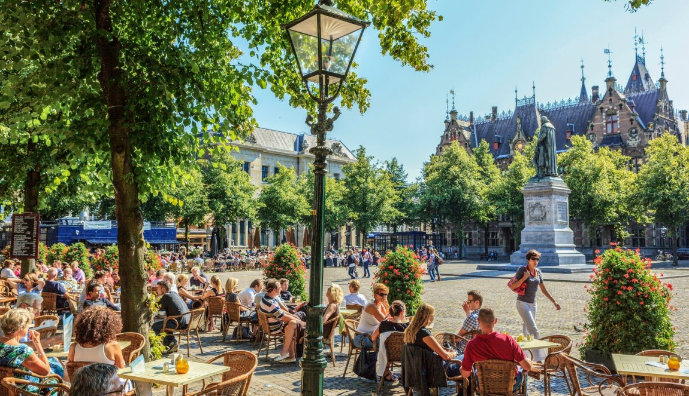

The Hague
Green city by the sea
The Hague is perhaps best known among visitors for its beaches, monuments and bustling shopping district, but secretly this city has much more to offer. As the political centre of the Netherlands, it offers a variety of cultural institutions and museums and there is an abundance of welcoming restaurants and bars. Come along as we visit the 'green city by the sea'.
Walking around the royal city

The Hague is the 3rd largest city in the Netherlands. Located along the coast, the city is particularly popular with beachgoers who enjoy the sun, sand, sea and the associated amenities. But don't think of The Hague as just a summer beach destination. With its many cultural sites, popular cafés and restaurants as well as lively festivals, the city is worth a visit any time of year. It's also the seat of the Dutch government and home to the Royal Family.
The beautiful, centuries-old Binnenhof is a complex of buildings that serves as the seat of the Dutch government. With parts of it dating to the 13th century, it's one of the oldest parliament buildings still in use anywhere in the world. Walk a few more minutes and you will find The Hague's most photographed building: the Peace Palace. This is the home of the International Court of Justice, the only judicial body of the United Nations located outside of New York.

Home to the Royal Family for four centuries, you might just run into our King during your visit to 's-Gravenhage, the city's formal name. The head of state has an office in the majestic Noordeinde Palace, which is surrounded by trendy boutiques and galleries.
Take a look at The Hague on a map and you'll immediately notice its long coastline. It consists of different beach sections, each with its own ambiance and character. The quirky Zwarte Pad is the perfect spot to chill and party, while the vibrant Noordboulevard has the Pier and the Kurhaus Hotel and a myriad of beach bars, restaurants and other attractions.

The Hague has a great buzz thanks to its many high-quality restaurants, cafés and clubs. The city is also packed with cultural attractions. Art lovers can enjoy days out visiting iconic museums beloved by locals and international visitors alike, such as the Mauritshuis and the Kunstmuseum. After Rotterdam and Amsterdam, this royal city by the sea has the largest amount of retail space in the Netherlands.
The many flavours of The Hague
- Best drinks hotspots in The Hague
- Nona restaurant
- China Town
- 9 Nice restaurants in The Hague with kids
Green city by the sea
The Hague is a green city by the sea. Visit this lovely city and be surprised by the number of green spaces and parks. Take the Malieveld for example — a huge grass field in the centre of The Hague, known for the numerous events, festivals and demonstrations held here. Its main claim to fame is the Liberation Festival, which attracts around 65,000 people every year.


During your visit, you might really appreciate the peace and quiet of one of the other fantastic parks and sizeable forests. Some of these, such as the Haagse Bos or the Palace Garden, are right in the city centre. Between the city and the beach you can go for a stroll in the Scheveningen Woods. Wherever you are, you're sure to be close to some green nature.
Head to the sea and you can visit not only the great beaches, but also the amazing dunes. These acres of dune areas and parks make up National Park Hollandse Duinen, a 43-kilometre-long continuous coastal landscape in the province of South Holland.
Go for a walk or hop on a bike
There is no better way to enjoy nature in The Hague than on foot or by bike. Various cycling routes and hiking routes have been designed specifically for this purpose so that you can get the most out of these marvellous parks, forests, dunes and beaches. Your visit to The Hague should include at least one tram ride — it is a convenient mode of transport and a truly unique experience.

Off the beaten track

Locals have an appropriate nickname for the Zuiderstrand: 'the quiet beach'. Located right behind the dunes, it features a number of authentic beach pavilions with unobstructed views of a beautiful sunset. The pavilions here are renowned for their friendly staff, delicious meals and casual vibe.
Pavilions such as Zuid, De Staat, De Kwartel and Millersbeach frequently organise cultural activities such as concerts, theatre performances and beach parties. There's also De Fuut, the home base of Theo Jansen, an artist and scientist who often works on his spectacular Strandbeesten here.

Here's a somewhat unusual suggestion: visit this beach when the weather is not that nice. The beaches of The Hague have a wonderful, moody vibe during the windy autumn and winter. Zip up your windbreaker and hike a few kilometres — it will give you a good excuse to enjoy a well-deserved hot chocolate with whipped cream!